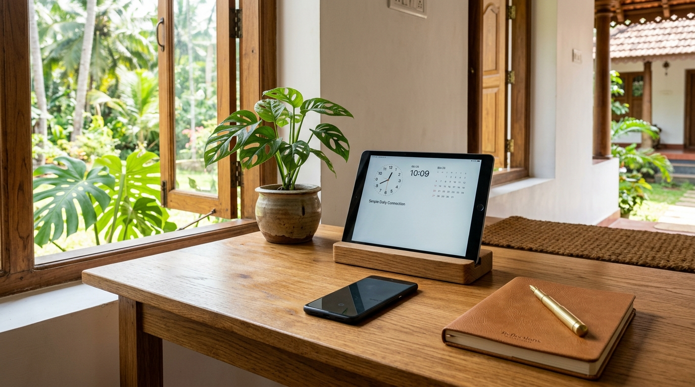

01 • Companionship
Tea & Deep Listening
ഒറ്റപ്പെടൽ ഒഴിവാക്കാൻ ഒരു കമ്പനി
Reading the morning Malayalam newspapers, reminiscing about family memories, and sharing unhurried conversations over hot tea.
"മക്കൾ ദൂരെയാണെങ്കിലും നാട്ടിലെ പ്രായമായ മാതാപിതാക്കൾ ഒറ്റയ്ക്കാകരുത്!"
Gentle, background-verified companionship and daily living presence for parents in Kerala while their children are away.

When Niveda Babu founded Arikil at age 29 in Palakkad, it wasn't to build a cold agency. It was born from seeing our own neighborhood parents spend quiet days alone while their children work tirelessly across the Gulf, UK, and around the world.
Parents who are physically independent don't need hospital nurses. What they miss is everyday human presence: someone to sit and converse with over hot morning tea, someone to stroll with through the courtyard, and someone to bring warmth and genuine laughter back into the house.
Honest, patient companionship tailored around your parents' lifelong habits and daily rhythms in Palakkad and Thrissur.
ഒറ്റപ്പെടൽ ഒഴിവാക്കാൻ ഒരു കമ്പനി
Reading the morning Malayalam newspapers, reminiscing about family memories, and sharing unhurried conversations over hot tea.
ആക്റ്റിവിറ്റി ചെയ്യിക്കുക, ഒപ്പം നടക്കുക
Paced strolls around the courtyard or neighborhood lanes, keeping bodies nimble, minds refreshed, and spirits high.

ഒരു മകനെപ്പോലെയോ മകളെപ്പോലെയോ കരുതലോടെ
Reliable, warm company at home so parents never feel the weight of empty quiet rooms throughout the week.

വിദേശത്തുള്ള മക്കൾക്ക് ഫോട്ടോ അപ്ഡേറ്റ്
After every visit, distant sons and daughters receive a cheerful photo update and notes on WhatsApp, bringing total peace of mind.
Three straightforward steps from your first inquiry to regular, trusted visits for your parents in Kerala.
Send us a message at +91 95655 33735. Tell us a little about your parents' location in Palakkad or Thrissur.
We visit your parents in person for an unhurried, friendly cup of tea so they can get to know us and feel completely at ease.
Regular, respectful visits commence at their preferred pace, with candid photo check-ins sent directly to your phone.
Inviting someone into your family home requires complete peace of mind. Here is our simple promise to you.
Every companion is thoroughly screened for character, background identity, and genuine respect for Kerala elders.
Founder Niveda Babu directly oversees companion allocations and conducts periodic check-ins with families in Palakkad and Thrissur.
You receive cheerful photo updates and visit summaries after each session, bridging the distance no matter where you live.
Starting in Palakkad and Thrissur, Kerala. Speak directly with us on WhatsApp or schedule a free, unhurried home introduction.